Søndeled kirke
Foto: Torvald Slettebø, Universitetet i Agder, Seniorsenteret (2007)
Tekster: Lauritz Paulsen, Bjarne Karsten Nenseter
Omvisning: Ivar Tormod Eidet
Den lille stenkirken ble først i 1768 utvidet til korskirke etter at tårnet ble reist i 1752.
Man kan vanskelig fastslå eksakt når Søndeled kirke ble bygget, men man antar det det kan ha skjedd omkring 1150 – og den hadde den gang navnet: Sunnaleidis kirkja. Den er bygd i anglesaksisk stil slik som flere av de gamle steinkirkene på Agder. Den lille stenkirken ble først i 1768 utvidet til korskirke etter at tårnet ble reist i 1752.
Døpefonten er det eneste av kirkens inventar fra kirkens eldste tid. Den er av kleberstein og så pass dyp at man kunne senke barna ned i døpefonten slik man gjorde det i ”gamle dager”. I bunnen av døpefonten er det et hull slik at dåpsvannet kunne renne ut uten å komme i forbindelse med noe urent når den hellige handling var avsluttet. Et messingfat gitt av Lauritz toller en gang på 1600-tallet er fremdeles brukt som dåpsfat.
En gammel ”stol” av ukjent alder finnes også i Søndeled kirke med årstallet 1211 innskåret i ryggen med arabertall. Det har vært innvendt at det i den tid ble brukt latinske tall, mens enkelte likevel hevder at arabertall kan ha vært noe brukt.
Antependiet – det gamle alterteppet – som henger i kirkeskipet skriver seg fra 1632 og er et klenodium. Den gamle altertavlen henger nå nede i kirkeskipet. Denne ble i sin tid bekostet av Jens Nilsen på Søndeled og viser nattverden.
På alteret står det 2 flotte, gamle lysestaker gitt av Isach Lauritzen Falch. Isach var den samme person som fikk Risør kirke bygget i 1746-47 og som ga mye inventar til denne kirken.
Et epifatium over presten Christen Svenningsen med familie henger i kirken ved oppgangen til prekestolen.
En bibel fra Christian den III tid ligger fremdeles på kirkens alterbord.
Ole Nilsen Veierholt fra Austre Moland har utført mange treskjærerarbeider i kirkene øst i Agder. Bl.a. har han skåret ut alterrammene til følgende kriker: Dypvåg kirke (1775), Risør kirke (1778), Søndeled kirke (1778) og Austre Moland kirke (1784).
Prekestolen skriver seg fra år 1800.
Orgel ble innkjøpt i 1896 til en pris av kr. 2.000,- og var i bruk fram til 1961 da nåværende orgel ble innkjøpt fra Norsk Orgel og Harmoniumfabrikk.
Kirken fikk elektrisk lys i 1925. Samme år fikk kirken 6 nye lysekroner.
Risør, 08. september 2008.
Lauritz Maartman Paulsen


 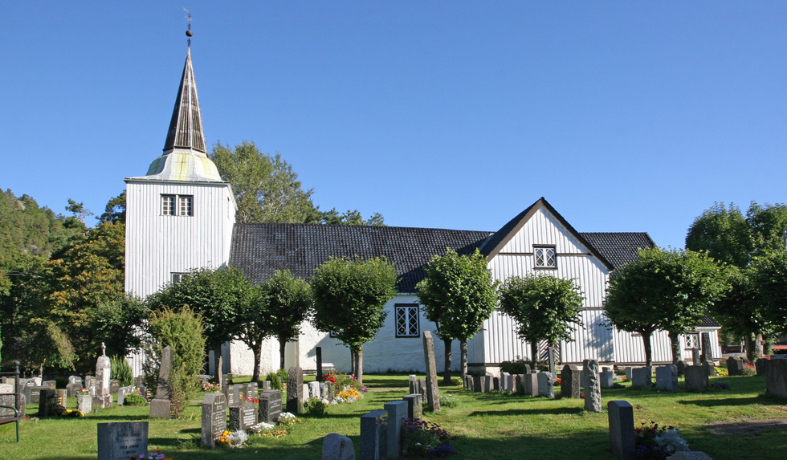
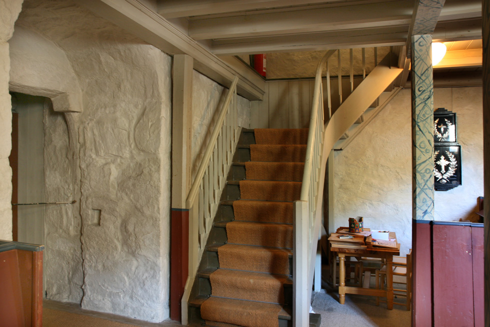
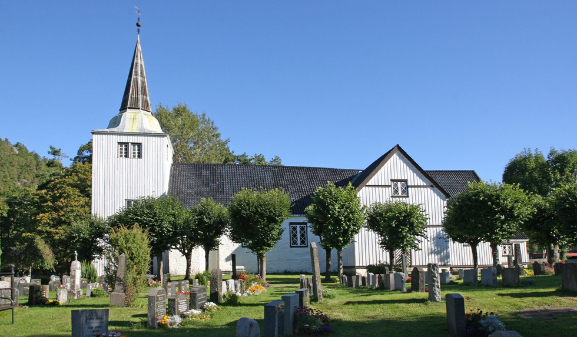
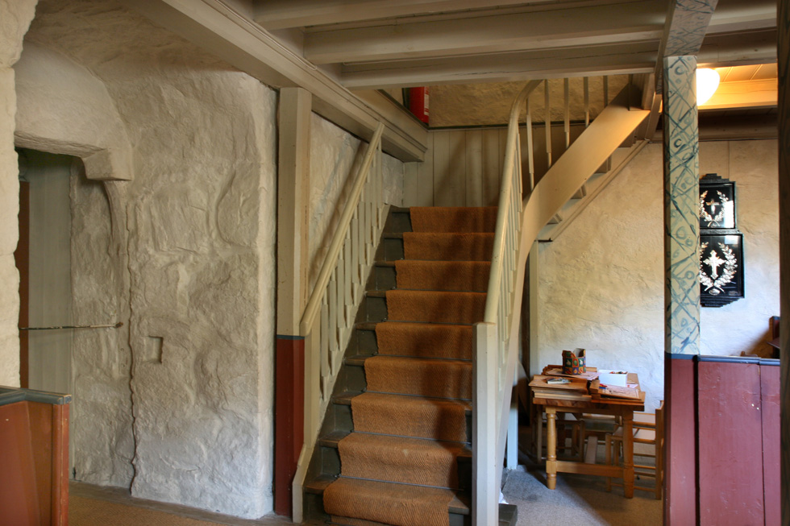


 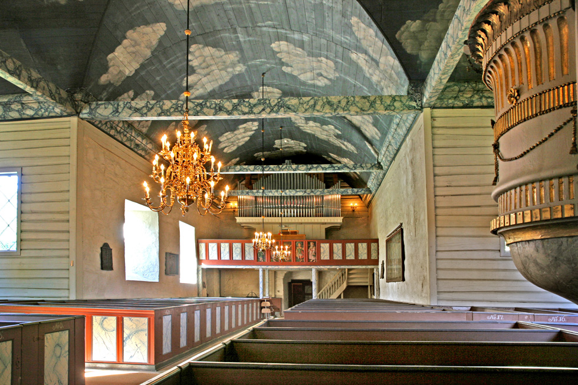
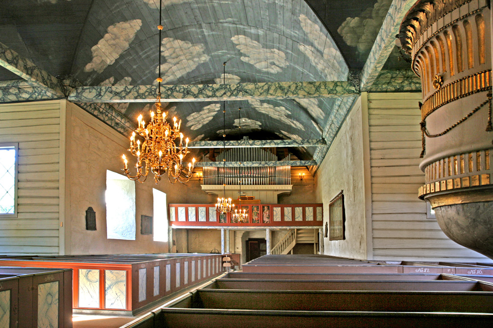

 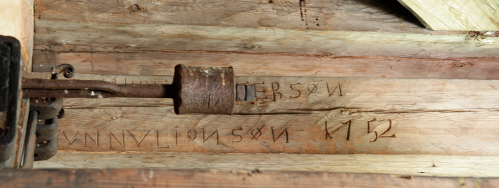
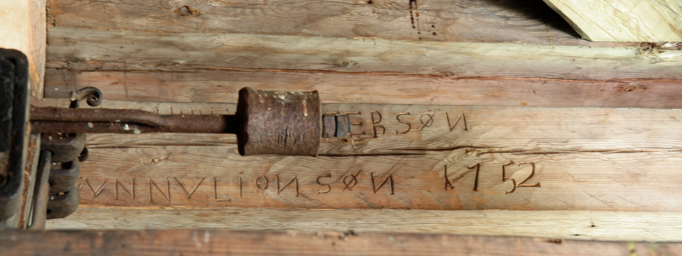
 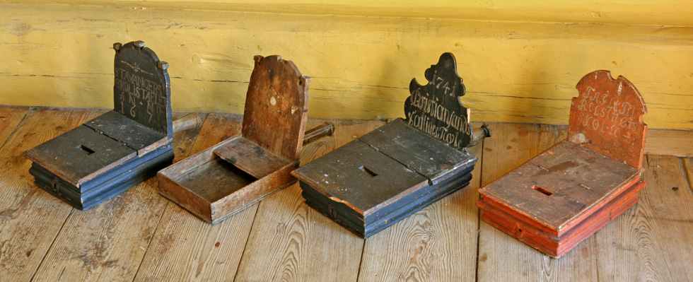
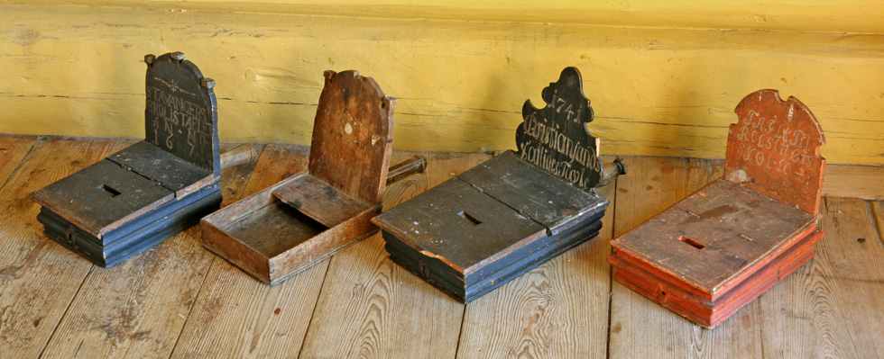
 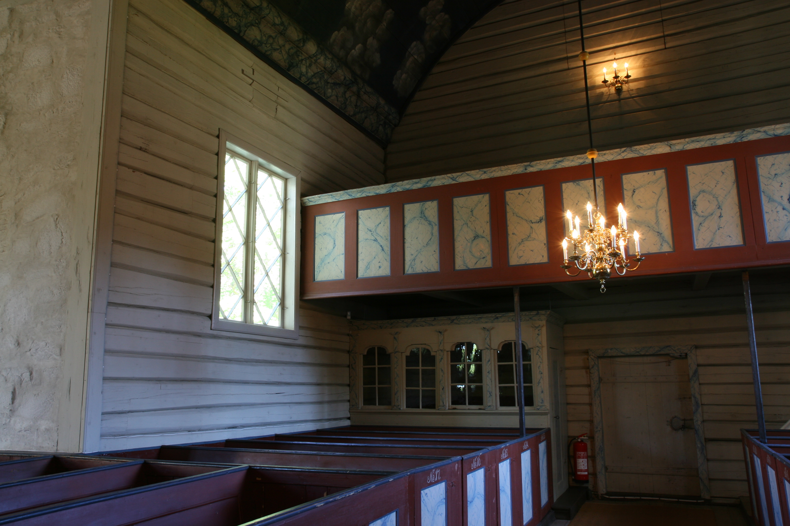
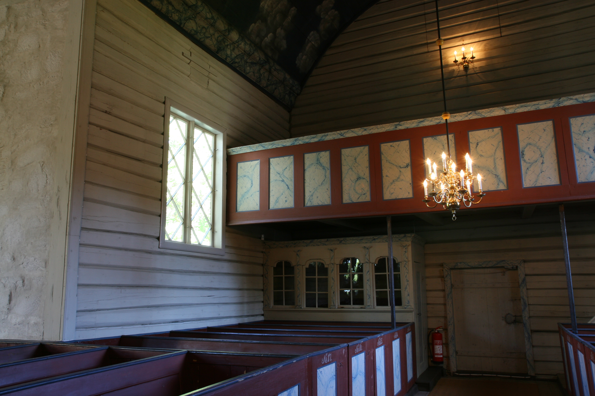
Søndeled Kirke - På Kirkevandring i Aust-Agder
Lengst mot øst i Aust-Agder ligger Søndeled ut mot havet, oppdelt av dype fjorder som deler bygda i forskjellige bygdelag. Men ett felles bindeledd har de hatt gjennom mange hundre år: Søndeled kirke.
Vi vet fra sagaen at Olav Trygvason for langs kysten og kristnet bøndene på Agder. Sagaen kan også fortelle at «Søndelef» eller «Visedal» som sognet før het, har vært høvdingsete i 12. århundre. I et dokument fra 1320 nevnes sira Eirik som prest til Søndeled. Ifølge tradisjonen skal Søndeled kirke ha vært felleskirke for Søndeled, Gjerstad og Vegårshei, en forbindelse som varte til 1745. I det året ble Søndeled og Risør utskilt fra Gjerstad. I 1877 ble Søndeled skilt ut fra Risør som eget prestegjeld, delt i to sogn, indre og ytre Søndeled. Ny kirke ble bygd for ytre Søndeled, Frydendal kirke som sto ferdig i 1879. Siden 1964 har Søndeled og Risør igjen vært ett prestegjeld og en kommune med Risør som hovedsogn.
Opprinnelig har Søndeled kirke vært en liten langkirke i angelsaksisk stil, bygd i metertykke gråstensmurer. Fra den gamle kirke har en døpefont i klebersten fra ca. 1150. Den gamle vakre inngangsportal ser en bare rester av.
Ved det store kirkesalg i 1720-årene kjøpte almuen kirken. I 1752 fikk kirken tårn, det samme som den har i dag, og kirkeklokke. Klokken bærer innskriften:
Jacob Rendler, anno 1751, mefecit. Bekostet av SunnelefAlmue.
Deo Gloria. Jeg ringer til kirke og kommer icke dery. O, måtte alle de meg høre, det untsky.
I 1765 ble kirken i likhet med flere andre stenkirker, bygget om til korskirke. Det var den drivende kapellan Claus Juel som tok initiativet til det. Byggmester var Lars Albretsen Øvernes som også sto for ombyggingen av Holt og Dypvåg kirker. De to nye korsarmer og koret ble bygget i tømmer. Også i Søndeled kirke møter vi Sørlandsrokokkoens mester Ole Nielsen Weierholt. Han har skåret korskilledekorasjonene og alterrammen, mens «Alterens Schilderier ere bekostede fra København Anno 1795». Kirken ble dekorert og malt i vakre farger med skyer i taket. Prekestolen er fra 1850-tallet, og skal ifølge tradisjonen være skåret av Peder Olsen Stifoss ved Egeland Verk. På nordveggen nede i kirken har en et vevet alterbilde fra 1630, som fremstiller nattverden. Kirkens eldste alterbilde i tre fra 1664 henger også nede i kirken. Kirkens største klenodium er et eksemplar av Christian III's Bibel fra 1550. Forøvrig har den nattverdkalk og disk fra 1618 og lysestaker fra 1634.
Det vakre og fargerike interiør som kirken fikk i pietismens tid i det 18.århundre, ble dessverre her som flere andre steder, overmalt i ensfarget gråtone, men i 1924 lykkes det restaureringskonsulent Finn Krafft ved en vellykket restaurering å gi kirken tilbake det gamle praktfulle interiør. Ingeniør P. A. Hansen ved Egeland Verk var initiativtaker til restaureringen som ble bekostet av Verket. Siden har kirken mottatt flere gaver både fra private og det offentlige. I 1925 fikk den 6 vakre messinglysekroner. Til 800-års jubileet i 1950 bekostet kommunen elektrisk varmeanlegg. Nytt orgel fikk kirken for noen år siden.
Søndeled kirke ligger vakkert til med et dekorativt fossefall like foran tårnbygningen. Gjennom flere århundrer har den fulgt bygdens historie og vært samlingsstedet for folket i sorg og i glede.
Teksten er hentet fra Bjarne Karsten Nenseters bok ”På Kirkevandring i Aust-Agder”, som han utga i 1993, på grunnlag av sine artikler i Agderposten i 1950-årene, da han var prest i Aust-Agder. Vi gjengir her teksten med tillatelse fra Nenseters arvinger.